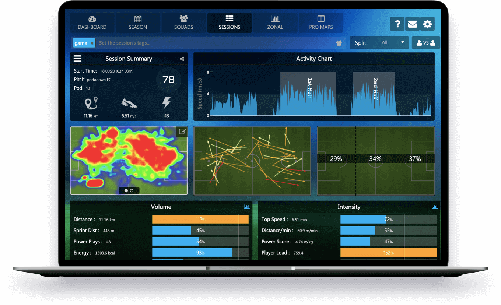
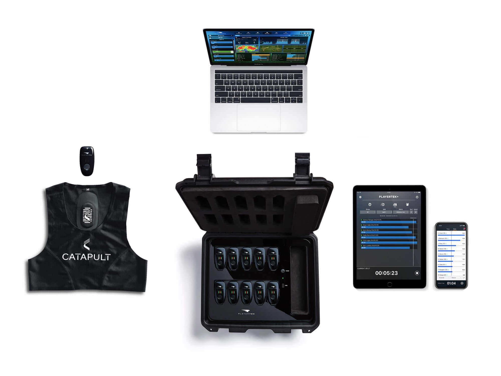

Centro Integral de Entrenamiento y Evaluaciones Físicas
Deportivas
Monitoreo cardíaco y de distancia personal
¿Qué son los sistemas GPS?

Los sistemas GPS en deportes de equipo son una herramienta que nos permiten conocer multitud de variables de carga de los jugadores, y que nos puede ayudar a controlar esta, a reducir la probabilidad de lesión y a la recuperación de lesionados.
Al medir los movimientos de los jugadores, los sistemas GPS en deportes de equipo puede utilizarse para cuantificar objetivamente los niveles de esfuerzo y el estrés físico de los deportistas.
Además, permiten examinar las prestaciones durante la competición, evaluar las diferentes cargas de trabajo en función del rol posicional, establecer intensidades de entrenamiento y supervisar los cambios en las demandas fisiológicas de los jugadores
Todo esto puede ser almacenado durante varios entrenamientos y competiciones, lo que nos puede permitir controlar en cierta manera el riesgo de lesión que pueden tener los jugadores.
Además, otro de los campos en los que nos puede ayudar los sistemas GPS en deportes de equipo es en la recuperación de una lesión y en el Return To Play, con el objetivo de equiparar las respuestas del lesionado con las que se dan en competición
GPS: Nuestros equipos

En Five Group contamos con 15 equipos de monitoreo cardíaco y de distancia. Los mismos pueden ser alquilados para uso personal, o para equipos deportivos.
Variables a tener en cuenta para el control de carga con GPS en deportes de equipo
En los últimos años se han integrado acelerómetros a los sistemas GPS en deportes de equipo, algo que nos permite obtener otras variables relacionadas con cambios de dirección, aceleraciones, deceleraciones y colisiones
En una reciente revisión sistemática se indicó las variables que se utilizaban más habitualmente, siendo en primer lugar, la distancia total recorrida. A partir de ahí, encontramos tres categorías de variables diferentes
En relación a las variables basadas en la velocidad, la velocidad máxima, distancia por minuto y las zonas de velocidad fueron las más utilizadas. Esta última es muy común, y clasifica la velocidad del jugador hasta en seis zonas. Sin embargo, existe una gran variabilidad en los estudios a la hora de determinarlas, por lo que se recomienda individualizar las zonas de velocidad a cada jugador.
En cuanto a variables basadas en las aceleraciones, el Player Load y las zonas de aceleración y deceleración. Esta última es similar a las zonas de velocidad, determinando hasta cuatro diferentes.
Por último existen variables compuestas, que incluyen velocidad y aceleraciones. Estas surgen para solventar el problema de que las zonas de velocidad no consideran aceleraciones y deceleraciones, y viceversa. Sin embargo, estas son muy recientes y en la única que ha sido estudiada, la Potencia Metabólica, se observó una falta de validez.